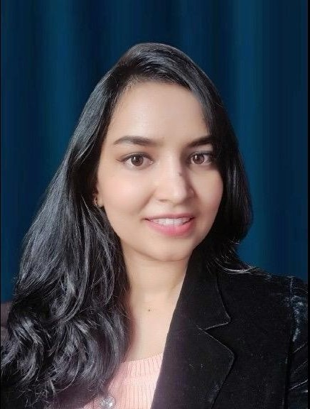

 Connect on LinkedIn
Connect on LinkedIn
About Me
I am Namrata Kumar, a Senior Software Development Engineer (Sr. SDE) at Cohesity and an MBA graduate from Liverpool John Moores University. With 5 years of experience in Full-Stack Development, SaaS, ERP, Subscription Management, and Enterprise Solutions, I drive business impact through a blend of technical expertise and product leadership. My career spans R&D innovation at DRDO & Tata Motors and enterprise product engineering at Veritas and Cohesity.
Email: kumarnamrata529@gmail.com
Professional Experience
Cohesity
- Sr Software Engineer – May 2025 to Present (9 mos)
Skills: Salesforce.com - Software Engineer – Dec 2024 to May 2025 (6 mos)
Working on Lead-to-Cash in ERP with Salesforce as the core technology, integrating other systems and optimizing processes. Handling data retention conversions from various systems like EBS, EDI, Custom web, applications.
Skills: Salesforce Lightning, Product Management, React.js, PL/SQL, Angular, Java, Salesforce Sales Cloud, Java Spring Boot, ERP
Veritas Technologies LLC
- IT Developer: Enterprise Applications – Apr 2022 to Dec 2024 (2 yrs 9 mos)
Expertise in product management, ERP solutions, software applications, subscription transformation, and full-stack development. Led cross-functional teams to deliver Quote-to-Cash solutions, integrate Zuora Billing, and optimize processes.
Skills: Negotiation, Business Process Management, Product Management, PL/SQL, Java, AngularJS, React, Microservices, SDLC, Enterprise Resource Planning (ERP) - Associate Developer – Mar 2021 to Mar 2022 (1 yr 1 mo)
Worked on full-stack software development projects including Licensing and ERP. Technologies: Java Spring Boot, DBMS, React, Angular, PL/SQL, WebLogic, Subscription Platforms, EBS, AWS/Azure marketplaces.
Tata Motors – Digital Transformation R&D
- Jan 2020 – Jun 2020 (6 mos)
Developed AI ChatBot for employees & vendors. Built Face Recognition system using MTCNN for security purposes.
Skills: Research, Java Spring Boot
DRDO – Research And Development
- Jun 2019 – Jan 2020 (8 mos)
Developed ‘Soldier Following Robot’ in Robotics Dept. Worked on LoRa, WiFi, Bluetooth, GPS, Arduino, BB.
Skills: Research
IoTIoT.in – Internship Trainee
- Jul 2018 – Dec 2018 (6 mos)
Embedded Linux and AI Applications. Supported creation of custom OS “Shunya” based on Linux.
Skills: AI, Embedded Linux
MTV Networks – Campus Ambassador
- 2016 – 2018 (2 yrs)
VH1 & MTV Campus Ambassador. Organized events and negotiated with brands for promotions.
WINWIN INNFRA (INDIA) PRIVATE LIMITED – Marketing Executive
- Jun 2016 – May 2017 (1 yr)
Marketing of real estate and energy-saving products in Pune.
Key Strengths & Expertise
- Product Strategy & Roadmaps – Driving product direction aligned with business impact
- End-to-End Product Execution – Managing lifecycle from ideation to launch & iteration
- SaaS & Enterprise Solutions – ERP, Lead-to-Cash, O2C, Subscription Management
- Technical Acumen – Java, React, Angular, PL/SQL, Salesforce Apex, Oracle EBS, REST APIs, AI/ML, Cloud Solutions
- Data-Driven Decision Making – Leveraging analytics, experimentation & A/B testing
- Cross-Functional Collaboration – Partnering with engineering, design, sales & leadership
Education
- Liverpool John Moores University – MBA, Product Management (Aug 2022 - Dec 2024)
Activities: Thesis Writing, Networking, Hands-on experience with Howard Simulators, Case Studies
Dissertation: Study of Sustainable Food Packaging Options with An Eco-Friendly Approach: Analyzing Consumer Behavior and Innovations - Maharashtra Institute of Technology – B.Tech, EnTC Engineering (Aug 2016 - Jun 2020)
Activities: Anchoring, Basketball, Chess, Technical Competitions, Department Joint Secretary
Achievements: National level Smart India Hackathon finalist, multiple prizes in Chess and Basketball
Projects: Hardware Hackathon, Software Hackathon, Intelligent Super Market, Vehicle Name Plate Recognition, Raspberry Pi OS - The Bishop's School, Pune – Junior College, Mathematics & Computer Science (Jun 2015 - Jun 2016)
Activities: Literary Club, Sports Club - The Bishop's School, Pune – ICSE, Mathematics & Computer Science (Jun 2013 - Jun 2014)